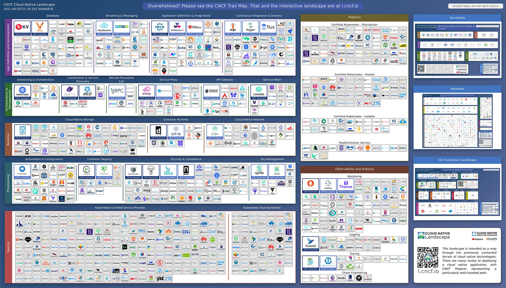

CNCF
CNCF（云原生计算基金会）简介
CNCF（Cloud Native Computing Foundation，云原生计算基金会），2015年由谷歌牵头成立，目前已有一百多个企业与机构作为成员，包括亚马逊、微软、思科、红帽等巨头。CNCF致力于培育和维护一个厂商中立的开源社区生态，用以推广云原生技术。
CNCF目前托管了非常多的开源项目，其中有很多我们耳熟能详的项目，例如 Kubernetes、Prometheus、Envoy、Istio、etcd等。更多的项目，你可以参考CNCF公布的 Cloud Native Landscape，它给出了云原生生态的参考体系，如下图所示：

什么是云原生？
CNCF官方在2018年发布了云原生v1.0，并给出了定义：
“云原生技术有利于各组织在公有云、私有云和混合云等新型动态环境中，构建和运行可弹性扩展的应用。云原生的代表技术包括容器、服务网格、微服务、不可变基础设施和声明式API。 这些技术能够构建容错性好、易于管理和便于观察的松耦合系统。结合可靠的自动化手段，云原生技术使工程师能够轻松地对系统作出频繁和可预测的重大变更。”
简单点说，云原生（Cloud Native）是一种构建和运行应用程序的方法，是一套技术体系和方法论。云原生中包含了3个概念，分别是技术体系、方法论和云原生应用。整个云原生技术栈是围绕着Kubernetes来构建的，具体包括了以下核心技术栈：
- 容器：Kubernetes的底层计算引擎，提供容器化的计算资源。
- 微服务：一种软件架构思想，用来构建云原生应用。
- 服务网格：建立在Kubernetes之上，作为服务间通信的底座，提供强大的服务治理功能。
- 声明式 API ：一种新的软件开发模式，通过描述期望的应用状态，来使系统更加健壮。
- 不可变基础设施：一种新的软件部署模式，应用实例一旦被创建，便只能重建不能更新，是现代运维的基础。
不可变基础设施（Immutable Infrastructure）的构想，是由Chad Fowler 于 2013 年提出的。具体来说就是：一个应用程序的实例，一旦被创建，就会进入只读的状态，后面如果想变更这个应用程序的实例，只能重新创建一个新的实例。通过这种模式，可以确保应用程序实例的一致性，这使得落地DevOps更加容易，并可以有效减少运维人员管理配置的负担。
声明式API 是指我们通过工具描述期望的应用状态，并由工具保障应用一直处在我们期望的状态。
Kubernetes的API设计，就是一种典型的声明式API。例如，我们在创建Deployment时，在Kubernetes YAML文件中声明应用的副本数为 2，即设置 replicas: 2，Deployment Controller就会确保应用的副本数一直为 2。也就是说，如果当前副本数大于 2，Deployment Controller会删除多余的副本；如果当前副本数小于 2，会创建新的副本。
声明式设计是一种设计理念，同时也是一种工作模式，它使得你的系统更加健壮。分布式系统环境可能会出现各种不确定的故障，面对这些组件故障，如果使用声明式 API ，你只需要查看对应组件的 API 服务器状态，再确定需要执行的操作即可。
什么是云原生应用？
整体来看，云原生应用是指生而为云的应用，应用程序从设计之初就考虑到了云的环境，可以在云上以最佳姿势运行，充分利用和发挥云平台提供的各种能力。具体来看，云原生应用具有以下三大特点：
- 从应用生命周期管理维度来看，使用DevOps和CI/CD的方式，进行开发和交付。
- 从应用维度来看，以微服务原则进行划分设计。
- 从系统资源维度来看，采用Docker + Kubernetes的方式来部署。